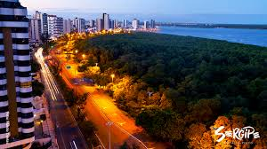

Sergipe é o menor estado do Brasil, localizado na região Nordeste. Apesar de seu tamanho, ele é cheio de charme e belezas naturais. O estado é conhecido por suas praias lindas, como a Praia do Saco e a Praia de Atalaia, que atraem muitos turistas. Sergipe também tem uma cultura vibrante, com festas tradicionais, música e culinária deliciosa, incluindo pratos com frutos do mar e a famosa tapioca. A capital, Aracaju, é uma cidade acolhedora, com uma orla bonita, parques e uma atmosfera tranquila. Além disso, Sergipe possui sítios arqueológicos e uma história rica, que refletem sua importância na cultura brasileira. É um lugar perfeito para quem gosta de natureza, história e uma vibe bem hospitaleira!
